Dra. Caroline Baima · Cursos para médicos
O que está no ar em cursos de dermatologia para médicos
Os anúncios ativos de 13 médicos e escolas que vendem curso, imersão ou mentoria para médicos em cicatriz de acne, laser, manchas e dermatologia estética, tirados da Biblioteca de Anúncios da Meta: o link de cada um, as peças que estão rodando e o que vale observar. É referência para as próximas gravações da Imersão, do Protocolo Pele Segura e da Formação Método A3.
O retrato em números
Lemos 241 anúncios, entre os 361 que estas páginas mantêm ativos hoje. Três números resumem como esse mercado anuncia:
Como usar este material
Os anúncios que estão no ar há mais tempo
São a prova mais forte de que o formato funciona.
O que se repete entre os melhores
“Exclusivo para médicos” escrito na peça
1 em cada 4 anúncios lidos diz no texto que é só para médico (“exclusivo”, “restrito”, “somente médicos”). O filtro está na frase: quem não é médico sai sozinho, e quem é médico se sente no lugar certo.
Dr. Felipe Ribeiro · MedCof Derma · Pele Digital · Victor Bechara · Guilherme MachadoNomear o caso como o médico nomeia
“Ice pick, boxcar e rolling”, “fototipos altos”, “paciente em Roacutan”. O termo técnico na primeira frase conversa com quem trata e afasta o curioso.
Dra. Núcia Pires · Dr. Felipe Ribeiro · Amanda DezontiniCaso clínico em forma de pergunta
“O paciente chega assim: você, de imediato, indica isso”, “Qual a melhor medicação para pacientes com DA?”, “É possível integrar a MMP® a outros tratamentos?”. O médico responde de cabeça e percebe o que ainda não sabe.
Dr. Felipe Ribeiro · Pele Digital · MMP AcademyA insegurança como gancho, não o dinheiro
“Saber injetar não é suficiente”, “Poucos profissionais dominam de verdade”, “A sua prescrição acompanhou?”. Quem está há mais tempo no ar vende segurança na conduta.
Mirele Fadel · Dra. Núcia Pires · Amanda Dezontini · Pele DigitalMesma legenda, várias peças
MedCof Derma e Patricia Carvalho mantêm 24 anúncios cada com uma legenda só; Amanda Dezontini, 14 com 4. O que muda é a capa e os primeiros segundos. É o jeito mais barato de achar a próxima peça que funciona.
MedCof Derma · Patricia Carvalho · Amanda Dezontini · Pele DigitalTrecho de aula vira anúncio
“Esta é uma prévia do que os alunos aprendem” (158 dias no ar), a bancada de sutura da SBCD, a aula com o caso no telão. Mostrar a aula prova que o curso existe e mostra o professor ensinando.
Dr. Felipe Ribeiro · SBCD · Irene DaherUm nome para o método
Método Lapidate, MMP®, Beauty Discovery, PD Signature, USkin. O nome aparece em toda peça e separa do “mais um curso de laser”. A Carol já tem o dela: Método A3.
Dra. Núcia Pires · MMP Academy · Mirele Fadel · Pele Digital · Leila RiedelOs especialistas
- 01Dr. Felipe Ribeiro145 ativos
- 02Dra. Nucia Pires10 ativos
- 03Dra. Amanda Dezontini14 ativos
- 04MedCof Derma (página papodedermato)24 ativos
- 05Pele Digital32 ativos
- 06Dra Mirele Fadel42 ativos
- 07Patricia Carvalho24 ativos
- 08MMP Academy12 ativos
- 09Sociedade Brasileira de Cirurgia Dermatológica (SBCD)19 ativos
- 10Victor Bechara Dermatologia33 ativos
- 11Dra. Irene Daher3 ativos
- 12Dra. Leila Riedel2 ativos
- 13Dr. Guilherme Machado1 ativo
01
Dr. Felipe Ribeiro
Dermatologista · Formação Avançada em Tratamento de Cicatrizes de Acne, Formação em Peeling Médico e Fellow de 6 meses
Biblioteca de anúncios ↗ Página no Facebook ↗
O que observar
- 145 anúncios ativos, o maior volume do grupo. O curso de cicatriz de acne roda ao lado de peeling e cosmecêuticos.
- O mesmo tema da Imersão, com a oferta dita numa frase: “uma única técnica raramente resolve”. Formação presencial de 2 dias combinando peeling profundo, laser de CO2, tunelização, preenchimento e dermoabrasão.
- Escassez de verdade, com número: “São 10 vagas, exclusivas para médicos, em ambiente hospitalar.”
- Caso clínico em duas telas: “O paciente chega assim:” em cima e “Você, de imediato, indica isso:” embaixo. O médico se reconhece no erro antes de ler a oferta.
- Trecho de aula como anúncio: “Esta é uma prévia do que os alunos aprendem na Formação em Peeling Médico” está no ar há 158 dias e pede “Comente FPM” em vez de mandar para a página.
- Autoridade que não é número de seguidor: livro indicado ao Prêmio Jabuti Acadêmico, formação no Hospital Saint-Louis (França), palestrante de congresso.

Comente FATC para saber mais sobre a Formação Avançada em Tratamento de Cicatrizes de Acne. Para médicos que buscam domínio teórico-prático no tratamento definitivo para…
Botão: Saiba mais ver anúncio ↗

Cicatrizes de acne estão entre as queixas que mais frustram médico e paciente, porque uma única técnica raramente resolve. Nesta formação presencial de 2 dias, o Dr.…
Botão: Saiba mais ver anúncio ↗

Cicatrizes de acne estão entre as queixas que mais frustram médico e paciente, porque uma única técnica raramente resolve. Nesta formação presencial de 2 dias, o Dr.…
Botão: Saiba mais ver anúncio ↗
Comente "FPM" para conhecer a Formação em Peeling Médico. Presencial em São Paulo, exclusiva para médicos que querem desenvolver raciocínio clínico, domínio técnico e…
Botão: Perfil do Instagram ver anúncio ↗

Esta é uma prévia do que os alunos aprendem na Formação em Peeling Médico. Comente "FPM" para saber mais. —— 🇬🇧 This is a preview of what students learn in the Chemical…
Botão: Perfil do Instagram ver anúncio ↗
Honrado em compartilhar que uma das minhas obras foi selecionada para concorrer ao Prêmio Jabuti Acadêmico. Ao longo de mais de 60 anos, o prêmio já reconheceu nomes…
Botão: Saiba mais ver anúncio ↗
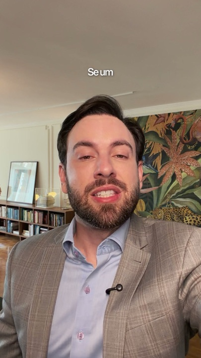
Muitos médicos querem começar a trabalhar com peeling, mas a agenda já está tomada por toxina e preenchimento, e o procedimento acaba ficando para depois. Nesta aula…
Botão: Saiba mais ver anúncio ↗

Palestrante nos maiores congressos de Dermatologia do mundo. Formado no Hospital Saint-Louis, na França. Autor de dois livros de referência em Peeling e Cosmecêuticos. O…
Botão: Saiba mais ver anúncio ↗
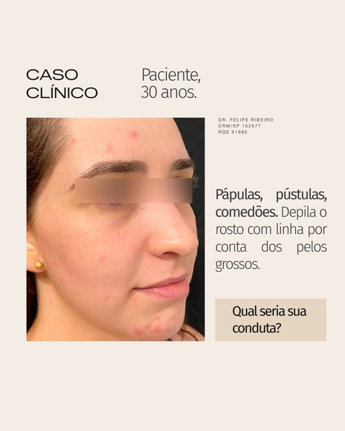
Tratar a acne com cosmecêuticos vai muito além de escolher ativos isolados. É preciso entender como indicar, combinar e inserir cada produto dentro de uma estratégia…
Botão: Saiba mais ver anúncio ↗
02
Dra. Nucia Pires
Dermatoestética · Imersão em Cicatriz de Acne e o “Método Lapidate”
Biblioteca de anúncios ↗ Página no Facebook ↗
O que observar
- Concorrente direta da Imersão: a Imersão em Cicatriz de Acne está no ar há 106 dias.
- Nomeia os tipos de cicatriz logo na primeira linha: “Ice pick, boxcar e rolling exigem raciocínio clínico.” Fala a língua de quem trata.
- Capa com desafio ao colega: “POUCOS PROFISSIONAIS DOMINAM DE VERDADE”.
- O método tem nome (Lapidate) e os casos da clínica viram prova: antes e depois de perto, em tela dividida, com a logo.
- Responde a objeção que também é a da HPI: “peles morenas, fototipos altos podem sim passar pelo tratamento”.
- A turma é aberta a “profissionais da saúde”, não só a médicos. É exatamente onde a Carol se diferencia.

Cicatriz de acne não se trata com técnica isolada. Ice pick, boxcar e rolling exigem raciocínio clínico, avaliação precisa e uma conduta bem estruturada para gerar…
Botão: Ver detalhes ver anúncio ↗

Aprenda cicatriz de acne com quem tem mais de 16 anos de experiência clínica. A Dra. Núcia Pires, especialista em cicatrizes ice pick, boxcar e rolling, criou uma…
Botão: Ver detalhes ver anúncio ↗

Aprenda cicatriz de acne com quem tem mais de 16 anos de experiência clínica. A Dra. Núcia Pires, especialista em cicatrizes ice pick, boxcar e rolling, criou uma…
Botão: Ver detalhes ver anúncio ↗

💎 Ele tentou de tudo para se livrar das cicatrizes de acne. Foram inúmeros produtos, tratamentos e promessas – mas nada parecia funcionar. Foi só depois de conhecer o…
Botão: WhatsApp ver anúncio ↗
✨ Iniciamos a terceira e última etapa do Lapidate! A primeira e segunda etapa o foco é remover as cicatrizes e a pele passou pela fase de regeneração celular. Agora,…
Botão: WhatsApp ver anúncio ↗
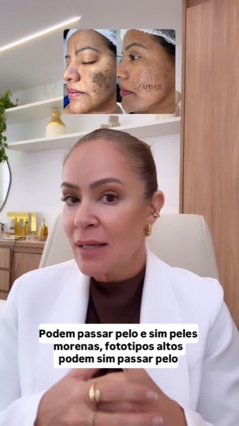
E sim peles morenas ou peles com melasma pode passar pelo tratamento de remoção das cicatrizes de acne!
Botão: WhatsApp ver anúncio ↗
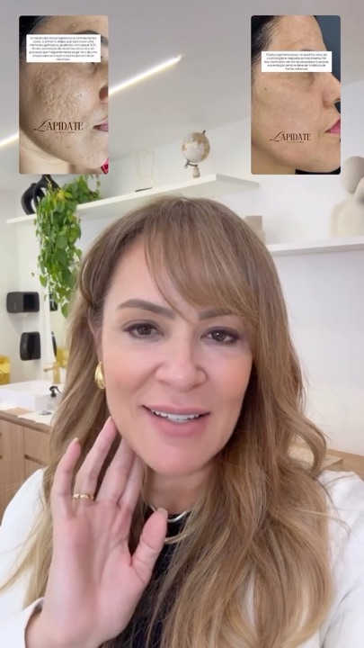
A pergunta que eu mais recebo é: As cicatrizes voltam? A resposta está neste vídeo.
Botão: WhatsApp ver anúncio ↗
03
Dra. Amanda Dezontini
Laser de CO2 · plataforma online e imersão presencial hands-on
Biblioteca de anúncios ↗ Página no Facebook ↗
O que observar
- 14 anúncios, todos em vídeo, com só 4 legendas: a mesma copy roda com várias gravações.
- Abre pela insegurança de quem compra: “Poucos profissionais sabem aplicar protocolos seguros para fototipos altos.” É o mesmo medo que o Protocolo Pele Segura resolve.
- Chama o público pelo que ele já tem na clínica: “você que investiu no Laser CO2”, “você que é profissional da harmonização”.
- Ela falando para a câmera em cima e o laser em uso embaixo, com o selo do protocolo (Blefaro Laser).
- Lista o que tem dentro: parâmetros por tipo de pele, anestesia, drug delivery, manejo de intercorrências e cuidados pós-procedimento.

Poucos profissionais sabem aplicar protocolos seguros para fototipos altos, realizar blefaroplastia sem corte e conduzir anestesia com real conforto para o paciente. No…
Botão: Saiba mais ver anúncio ↗

Poucos profissionais sabem aplicar protocolos seguros para fototipos altos, realizar blefaroplastia sem corte e conduzir anestesia com real conforto para o paciente. No…
Botão: Saiba mais ver anúncio ↗

Domine o uso do Laser CO2 na prática clínica com protocolos completos e aplicáveis desde os primeiros atendimentos. Você terá acesso a: • Protocolos de CO2 do básico ao…
Botão: Saiba mais ver anúncio ↗

Poucos profissionais sabem aplicar protocolos seguros para fototipos altos, realizar blefaroplastia sem corte e conduzir anestesia com real conforto para o paciente. No…
Botão: Saiba mais ver anúncio ↗

Domine o uso do Laser CO2 na prática clínica com protocolos completos e aplicáveis desde os primeiros atendimentos. Você terá acesso a: • Protocolos de CO2 do básico ao…
Botão: Saiba mais ver anúncio ↗

Agora é oficial: São Paulo, nós vamos! Nos dias 5 e 6 de outubro, as Dras. Amanda Dezontini e Rafaela Marrafão estarão em São Paulo para uma imersão presencial hands-on…
Botão: Ver detalhes ver anúncio ↗
04
MedCof Derma (página papodedermato)
Anuncia o Curso de Cosmiatria Avançada do MedCof Derma
Biblioteca de anúncios ↗ Página no Facebook ↗
O que observar
- 24 anúncios com uma única legenda: o que muda é a arte. É teste de peça, não de texto.
- A regra de público está na primeira frase: “uma metodologia sólida, restrita a médicos”.
- Título que corrige uma crença: “Resultado natural em injetáveis não é sorte. É planejamento anatômico.”
- Oferta para quem já é da casa: “É aluno ou ex-aluno MedCof? Seu histórico tem valor aqui também.” A base antiga vira público de venda.
- Alterna arte clara com bastante texto e a professora falando para a câmera na clínica.
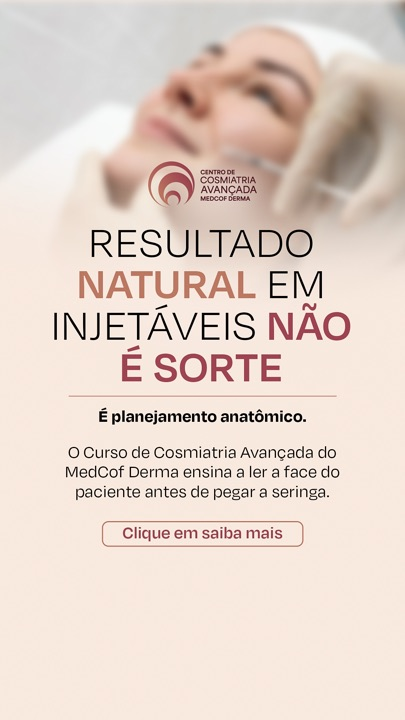
Domine o planejamento facial e a execução técnica com uma metodologia sólida, restrita a médicos e focada em resultados naturais e individualizados. 👉 Garanta sua vaga
Botão: Saiba mais ver anúncio ↗

Domine o planejamento facial e a execução técnica com uma metodologia sólida, restrita a médicos e focada em resultados naturais e individualizados. 👉 Garanta sua vaga
Botão: Saiba mais ver anúncio ↗

Domine o planejamento facial e a execução técnica com uma metodologia sólida, restrita a médicos e focada em resultados naturais e individualizados. 👉 Garanta sua vaga
Botão: Saiba mais ver anúncio ↗
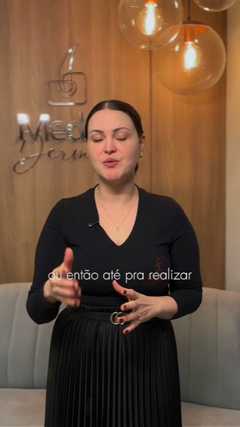
Domine o planejamento facial e a execução técnica com uma metodologia sólida, restrita a médicos e focada em resultados naturais e individualizados. 👉 Garanta sua vaga
Botão: Saiba mais ver anúncio ↗
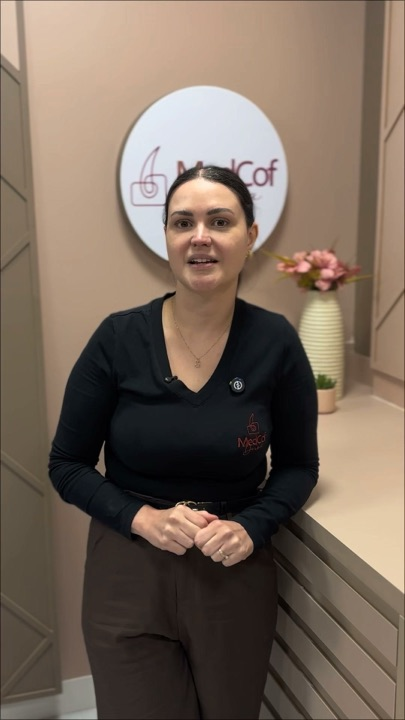
Domine o planejamento facial e a execução técnica com uma metodologia sólida, restrita a médicos e focada em resultados naturais e individualizados. 👉 Garanta sua vaga
Botão: Saiba mais ver anúncio ↗
05
Pele Digital
Academia de atualização para dermatologistas · PD Signature e eventos online
Biblioteca de anúncios ↗ Página no Facebook ↗
O que observar
- Tem anúncio no ar há 343 dias: um carrossel de conteúdo técnico (psoríase ungueal), sem oferta nenhuma.
- Conteúdo com cara de aula leva para o perfil, e a venda vem depois: “O melasma pode ser um ‘grito’ do seu corpo, não apenas uma mancha.”
- Pergunta clínica na capa, com o professor: “Qual a melhor medicação tópica ou sistêmica para pacientes com DA?”
- Cutuca a prática desatualizada: “A Dermatite Atópica mudou. A sua prescrição acompanhou?”
- Evento de laser gratuito com o selo “Somente médicos”, e depoimento de aluna virando arte: “Eu tive uma melhora no tratamento dos meus pacientes, eu estou me sentindo mais segura!”
Quer ter mais segurança para usar o Laser de CO2 e aproveitar melhor o potencial dessa tecnologia no seu consultório? O CO2 é uma das tecnologias mais versáteis da…
Botão: Ver detalhes ver anúncio ↗
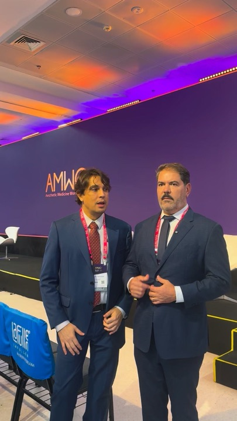
Quer ter mais segurança para usar o Laser de CO2 e aproveitar melhor o potencial dessa tecnologia no seu consultório? O CO2 é uma das tecnologias mais versáteis da…
Botão: Ver detalhes ver anúncio ↗
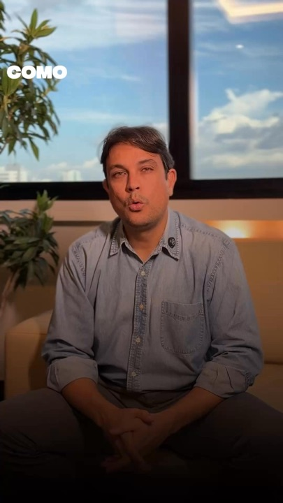
Chegou a hora de transformar a sua Dermatologia! Tenha acesso ao que há de melhor em: Terapêuticas, Prescrições e Protocolos A academia Pele Digital é um programa…
Botão: Ver detalhes ver anúncio ↗
É comum sentir insegurança ao indicar um tratamento novo ou prescrever fora do habitual. Afinal, o volume de publicações é alto, e nem sempre há tempo para validar tudo…
Botão: Comprar agora ver anúncio ↗
A Dermatite Atópica mudou. A sua prescrição acompanhou? Chega de prescrever do jeito que se prescrevia em 2018. Clique em saiba mais e se inscreva no Dermatite Atópica…
Botão: Saiba mais ver anúncio ↗
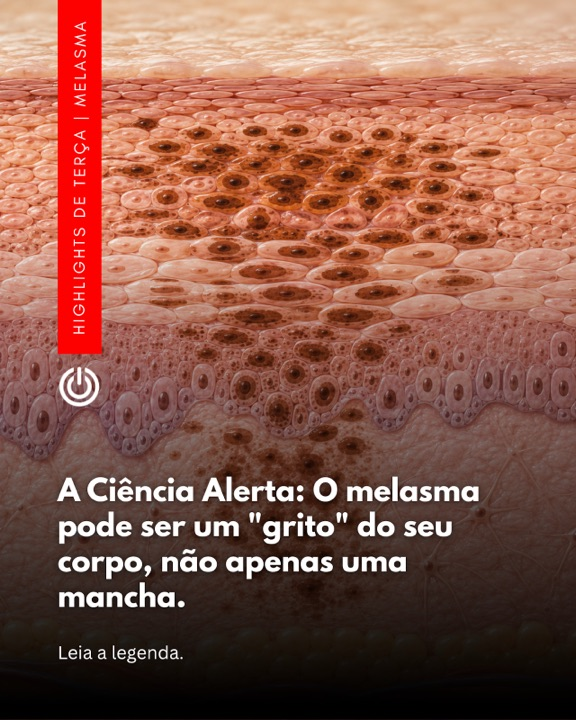
A nova fronteira da dermatologia revela que manchas na pele podem ser apenas a ponta do iceberg. Durante anos, o melasma foi tratado apenas como um problema estético…
Botão: Perfil do Instagram ver anúncio ↗
📱 COMPARTILHE ESTE CARROSSEL: "Psoríase nas unhas? As novas opções de tratamento podem transformar sua qualidade de vida!" Você sabia que a psoríase ungueal afeta até…
Botão: Perfil do Instagram ver anúncio ↗
06
Dra Mirele Fadel
Mentorias de dermatologia estética para médicos · Beauty Discovery
Biblioteca de anúncios ↗ Página no Facebook ↗
O que observar
- 42 anúncios, mas o que está no ar há 331 dias é anúncio para paciente. As mentorias rodam há 111 dias.
- Chama o médico na primeira palavra: “Médico, saber injetar não é suficiente.” e “Colega médico, já sentiu que poderia ter feito mais por um paciente?”
- Três formatos com nome próprio: Mentoria Private (um dia individual), Beauty Discovery Online e práticas supervisionadas. É uma escada, como Imersão → Formação A3.
- Aluna de longe como prova: “Direto de Portugal para a Mentoria Beauty Discovery Private!”
- A arte de “pacientes modelo com até 60% de redução” é exemplo do que não fazer (veja “O que não copiar”).
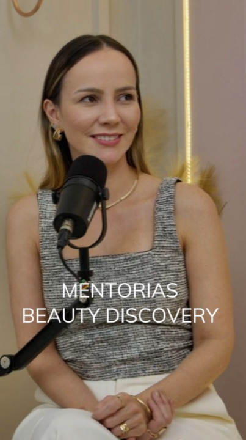
Médico, você já conhece nossas Mentorias? ✨ Se você deseja dominar a dermatologia estética com segurança e técnica, criamos três formatos exclusivos para sua jornada…
Botão: Ver detalhes ver anúncio ↗
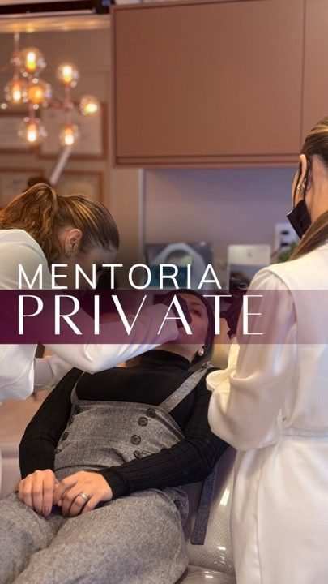
Médico, quer ter segurança para injetar e montar planos de tratamento com confiança? Na Mentoria Private, você vive um dia inteiro exclusivo comigo — só você e eu,…
Botão: Ver detalhes ver anúncio ↗
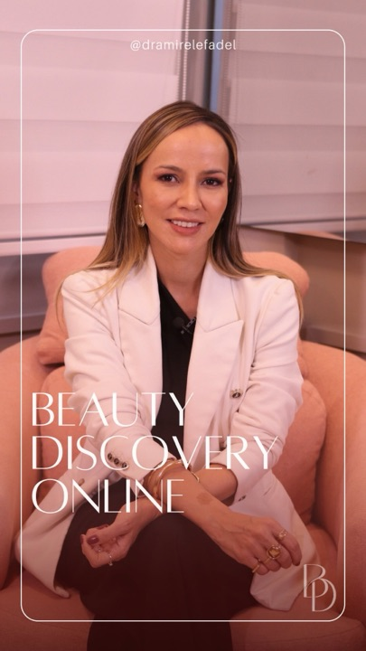
Médico, saber injetar não é suficiente. Você já fez vários cursos práticos, mas ainda sente insegurança ao atender? A dúvida sobre o melhor protocolo, produto ou técnica…
Botão: Ver detalhes ver anúncio ↗
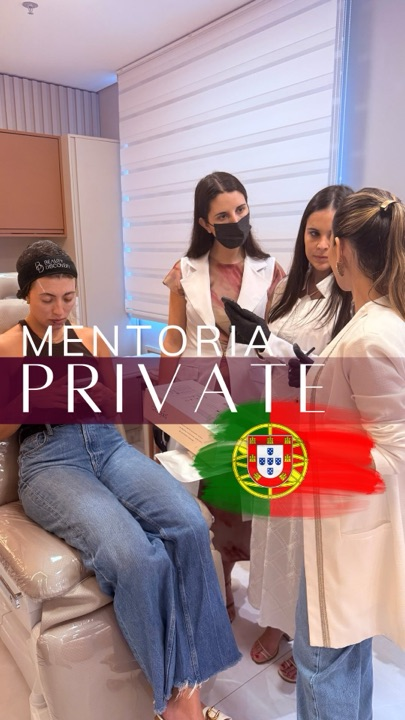
🇵🇹 Direto de Portugal para a Mentoria Beauty Discovery Private! Nestes dois dias, tivemos o prazer de receber duas médicas portuguesas em busca de aperfeiçoamento e…
Botão: Ver detalhes ver anúncio ↗
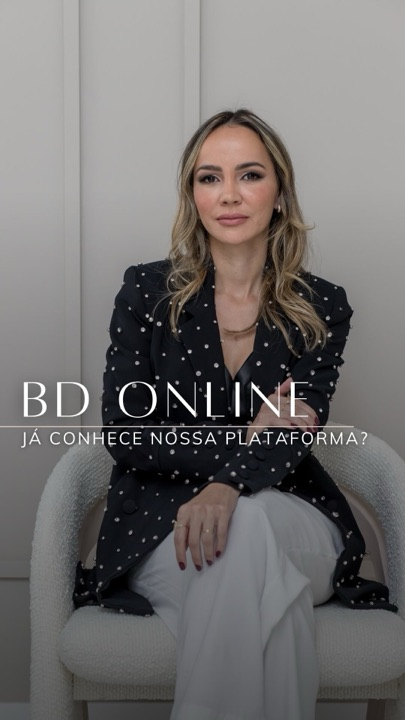
Colega médico, já sentiu que poderia ter feito mais por um paciente? Saber injetar não basta. É preciso estratégia, visão e segurança para montar um plano completo e…
Botão: Ver detalhes ver anúncio ↗
Participe das práticas supervisionadas pela Dra. Mirele, realizadas em ambiente clínico. (valores com até 60% de abatimento) O que pode entrar nessas turmas (varia por…
Botão: Ver detalhes ver anúncio ↗
07
Patricia Carvalho
Página de estética · curso online de tratamento de melasma
Biblioteca de anúncios ↗ Página no Facebook ↗
O que observar
- 24 anúncios, todos em vídeo, com uma legenda só: o que ela testa é o gancho da capa.
- O gancho mais forte do grupo para falar de mancha: “Clareou. E voltou dobrado em 30 dias.” O rebote é a dor que o Protocolo Pele Segura resolve.
- Mostra o procedimento de perto e a mancha sem filtro, sem cenário.
- É oferta de entrada (curso em vídeo, certificado, acesso por 1 ano) numa página de estética. Vale o gancho, não o resto, e a capa “15 dias de estudo. Primeira paciente fechada.” está em “O que não copiar”.
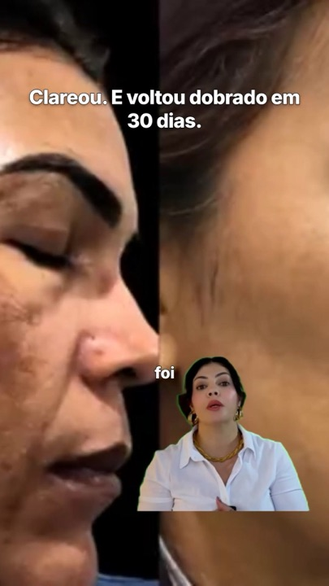
Aprenda hoje a tratar melasma. Esse curso vai te ajudar a dominar o melasma e ser uma especialista! ✅ Curso em vídeo ✅ Certificado de conclusão ✅ Acesso por 1 ano…
Botão: Saiba mais ver anúncio ↗
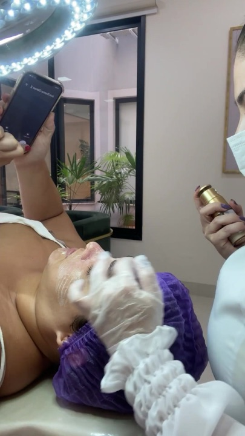
Aprenda hoje a tratar melasma. Esse curso vai te ajudar a dominar o melasma e ser uma especialista! ✅ Curso em vídeo ✅ Certificado de conclusão ✅ Acesso por 1 ano…
Botão: Saiba mais ver anúncio ↗
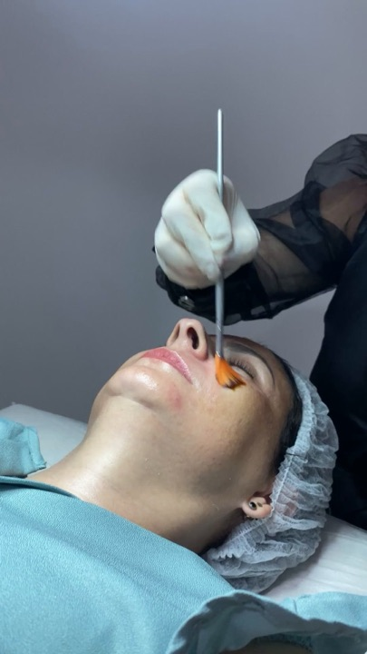
Aprenda hoje a tratar melasma. Esse curso vai te ajudar a dominar o melasma e ser uma especialista! ✅ Curso em vídeo ✅ Certificado de conclusão ✅ Acesso por 1 ano…
Botão: Saiba mais ver anúncio ↗
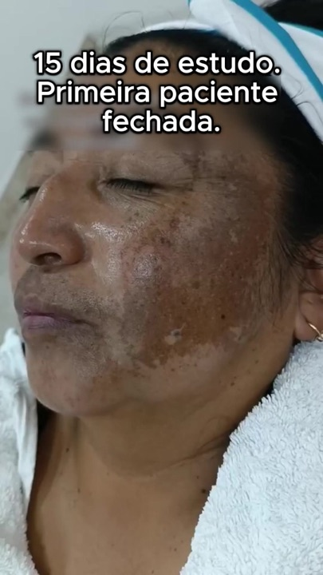
Aprenda hoje a tratar melasma. Esse curso vai te ajudar a dominar o melasma e ser uma especialista! ✅ Curso em vídeo ✅ Certificado de conclusão ✅ Acesso por 1 ano…
Botão: Saiba mais ver anúncio ↗
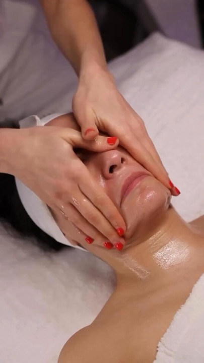
Aprenda hoje a tratar melasma. Esse curso vai te ajudar a dominar o melasma e ser uma especialista! ✅ Curso em vídeo ✅ Certificado de conclusão ✅ Acesso por 1 ano…
Botão: Saiba mais ver anúncio ↗
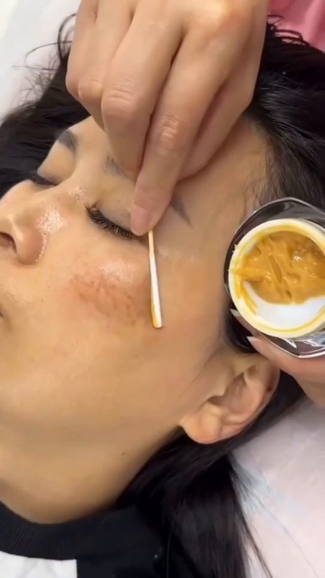
Aprenda hoje a tratar melasma. Esse curso vai te ajudar a dominar o melasma e ser uma especialista! ✅ Curso em vídeo ✅ Certificado de conclusão ✅ Acesso por 1 ano…
Botão: Saiba mais ver anúncio ↗
08
MMP Academy
Escola de uma técnica própria (MMP®, microinfusão de medicamentos na pele)
Biblioteca de anúncios ↗ Página no Facebook ↗
O que observar
- A técnica tem marca registrada e a escola existe para ensiná-la: “Uma plataforma criada por quem inventou a técnica.”
- Toda capa é uma pergunta que o médico faria: “O que torna a MMP® tão prática?”, “Como a MMP® funciona?”, “É possível integrar a MMP® a outros tratamentos?”
- Série “MMP® em 60 segundos”, com a criadora explicando rápido.
- Luva e aparelho em close: o anúncio mostra o gesto técnico, não o resultado. O mais antigo está no ar há 160 dias.
A MMP®️ é portátil, versátil e fácil de integrar à rotina do consultório, permitindo aplicar a técnica com precisão, segurança e consistência, em diferentes contextos…
Botão: Perfil do Instagram ver anúncio ↗
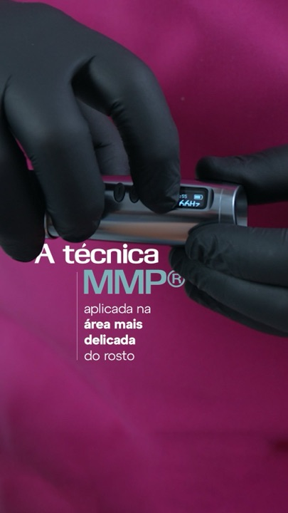
A técnica MMP® aplicada na área mais delicada do rosto Imagem: take fechado do vídeo (só a região da aplicação na área dos olhos) Legenda: Tratar lesão periorbital é…
Botão: Saiba mais ver anúncio ↗
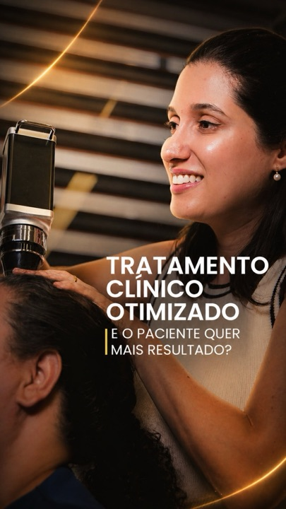
Paciente aderente, medicação ajustada, resultado parcial. E agora? Esse é um dos cenários mais comuns em tricologia: o tratamento domiciliar está no teto, a alopecia…
Botão: Perfil do Instagram ver anúncio ↗
A técnica MMP®️ foi desenvolvida com critério clínico, validada na prática e consolidada na dermatologia, mas chegou um momento em que percebemos que não conseguíamos…
Botão: Saiba mais ver anúncio ↗
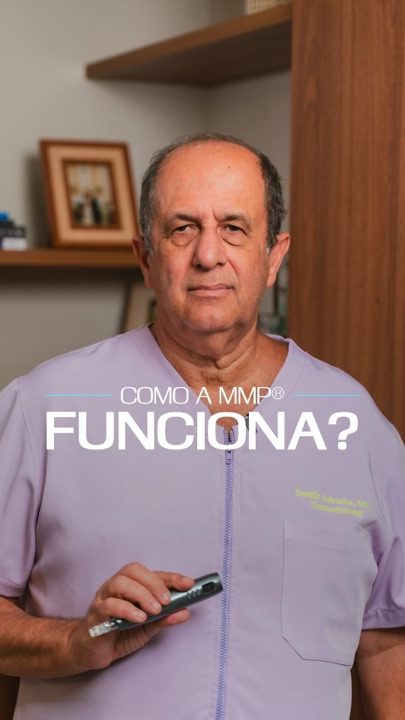
Você pode ler sobre controle de profundidade, intenção clínica e precisão de entrega, mas nada substitui entender os detalhes e as características da técnica na prática.…
Botão: Saiba mais ver anúncio ↗
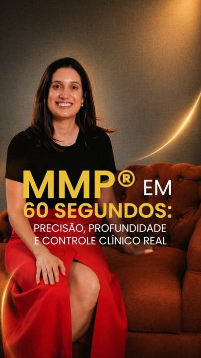
O que muda com a técnica MMP®️ é o nível de controle sobre onde e como o medicamento chega. Isso torna a técnica aplicável em dermatologia clínica, estética, capilar,…
Botão: Perfil do Instagram ver anúncio ↗
09
Sociedade Brasileira de Cirurgia Dermatológica (SBCD)
Sociedade Brasileira de Cirurgia Dermatológica · Curso de Aperfeiçoamento 2027
Biblioteca de anúncios ↗ Página no Facebook ↗
O que observar
- Até a sociedade da especialidade anuncia curso: 19 anúncios ativos, programa de um ano em seis módulos.
- Prova pela história: “Mais de 400 dermatologistas já fizeram parte dessa trajetória”, na XV edição.
- Mostra a aula prática acontecendo: bancada de sutura, pele sintética, centro cirúrgico, auditório cheio. Nada de estúdio.
- Os anúncios do curso têm 7 dias e todos apresentam a nova coordenação, com o nome de cada professor.
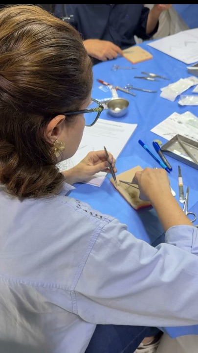
O Curso Teórico-Prático de Aperfeiçoamento em Cirurgia Dermatológica, Cosmiatria e Laser da SBCD é um programa que conversa com quem está dando os primeiros passos…
Botão: Saiba mais ver anúncio ↗
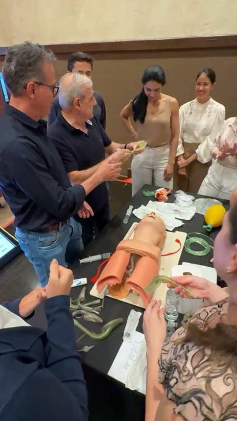
O Curso de Aperfeiçoamento da SBCD está prestes a viver um marco: a XV edição.Mais de 400 dermatologistas já fizeram parte dessa trajetória — e agora um novo time se…
Botão: Saiba mais ver anúncio ↗
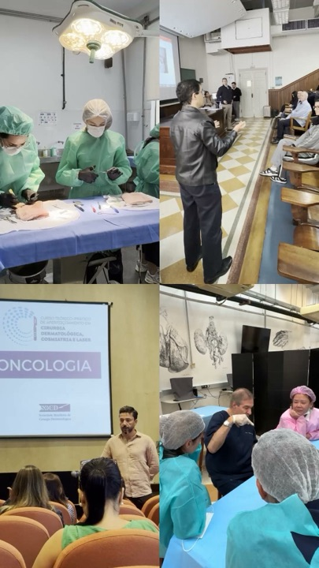
O Aperfeiçoamento SBCD 2027 está preparando uma programação à altura de uma história de quinze edições. Os principais nomes da Cirurgia Dermatológica brasileira,…
Botão: Saiba mais ver anúncio ↗
10
Victor Bechara Dermatologia
Dermatologista no Rio de Janeiro · Fellowship Médico
Biblioteca de anúncios ↗ Página no Facebook ↗
O que observar
- A página mistura paciente e médico: 18 dos anúncios lidos levam para o WhatsApp da clínica.
- O Fellow traz um aviso que protege a marca: “destinado exclusivamente a médicos… não confere título de especialista ou RQE”.
- Título grande em serifa na capa: “Fellowship Médico”, “ROTINA de uma clínica de alta performance”.
- Usa imprensa como autoridade: matéria da Bazaar, “Por que o laser de CO2 voltou a bombar nos consultórios”.
- Vídeo de conteúdo sobre o tema da Carol, “Nem toda cicatriz de acne é igual”, no ar há 86 dias.
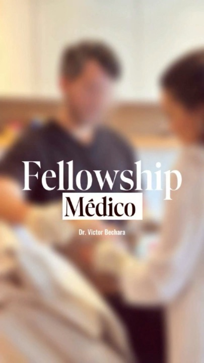
Fellow destinado exclusivamente a médicos. A comprovação da formação médica será solicitada no momento da matrícula. O Fellow consiste em programa de aperfeiçoamento…
Botão: Cadastre-se ver anúncio ↗
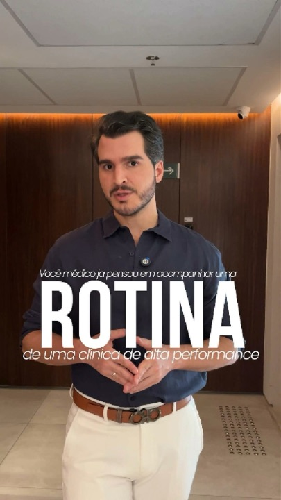
Fellow destinado exclusivamente a médicos. A comprovação da formação médica será solicitada no momento da matrícula. O Fellow consiste em programa de aperfeiçoamento…
Botão: Cadastre-se ver anúncio ↗
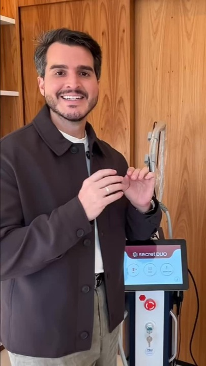
Nem toda cicatriz de acne é igual. E é justamente por isso que não existe uma única solução para todos os casos. As cicatrizes podem apresentar diferentes profundidades,…
Botão: Sem botão ver anúncio ↗
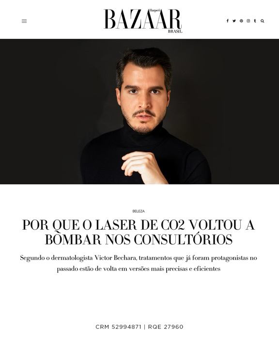
O laser de CO₂ não voltou porque virou tendência. Voltou porque evoluiu. Durante muitos anos, ele foi associado a tratamentos intensos e períodos longos de recuperação.…
Botão: Saiba mais ver anúncio ↗
11
Dra. Irene Daher
Cosmiatria · curso ID Cosmiatria
Biblioteca de anúncios ↗ Página no Facebook ↗
O que observar
- Só 3 anúncios, todos levando para o WhatsApp.
- Fala com o médico recém-formado: “Você se formou. Mas sua evolução não precisa parar aqui.”
- Aquece antes de abrir turma: “Em breve, vou revelar data, local e como garantir sua vaga.” É anúncio de lista de espera.
- Aula gravada com o caso da paciente no telão, atrás dela.
Você se formou. Mas sua evolução não precisa parar aqui. Médicos de cirurgia plástica, dermatologia e outras especialidades estão ampliando sua atuação com o curso de…
Botão: WhatsApp ver anúncio ↗
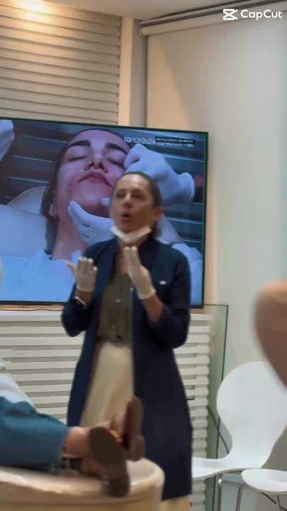
Atenção, São Paulo! O ID Cosmiatria está chegando! 🚨 Você pediu, e agora é oficial: o curso ID Cosmiatria terá uma edição presencial em São Paulo muito em breve! 🎉 Se…
Botão: WhatsApp ver anúncio ↗
12
Dra. Leila Riedel
Ultrassom na cosmiatria · imersão USkin
Biblioteca de anúncios ↗ Página no Facebook ↗
O que observar
- Um tema técnico só, e a copy começa pelo risco: “O rosto inteiro é uma área de risco.”
- A imersão explicada com datas: 3 dias de preparação online e 3 dias presenciais.
- Ela sentada, falando para a câmera no consultório. É o formato mais simples do grupo.
A ultrassonografia mudou a forma de conduzir a cosmiatria. No USkin, você aprende um método prático em 3 dias de imersão presencial, precedidos por uma preparação…
Botão: Perfil do Instagram ver anúncio ↗
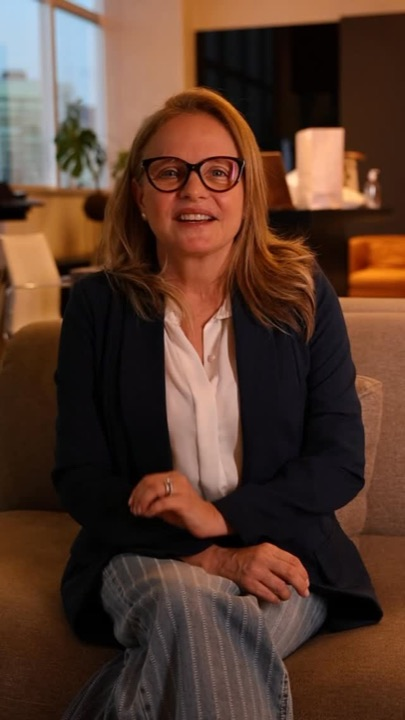
O rosto inteiro é uma área de risco. A vascularização varia de paciente para paciente, e um preenchimento às escuras é um risco desnecessário. O ultrassom mostra a…
Botão: Perfil do Instagram ver anúncio ↗
13
Dr. Guilherme Machado
Hands-on de laser de CO2 para médicos · Brasília
Biblioteca de anúncios ↗ Página no Facebook ↗
O que observar
- Um anúncio só, estático, com a data grande (24 de outubro) e o selo “Exclusivo para médicos”.
- É o mesmo professor do evento CO2 Excellence da Pele Digital: dar aula no evento dos outros vira vitrine para o próprio curso.
- Vende raciocínio, não protocolo: “ir além dos protocolos prontos e aprofundar o raciocínio clínico por trás de cada disparo”.
O que não copiar
- Promessa de faturamento. “Está deixando dinheiro e resultados na mesa”, “clínicas mais lucrativas”, “aumentam a lucratividade do seu consultório”. Para médico, dinheiro como gancho barateia o curso, e promessa de ganho financeiro é das coisas que as regras de anúncio da Meta restringem.
- Resultado de aluno em tempo recorde. “15 dias de estudo. Primeira paciente fechada.” É print de venda em forma de capa: promete o resultado de quem compra, e o médico desconfia.
- Escassez que não existe. “Vagas limitadas” em aula online ao vivo, “as inscrições serão limitadas” antes de ter data. Quando o limite é real, diga o número, como o Dr. Felipe faz (“São 10 vagas, em ambiente hospitalar”). Na Imersão online, a urgência verdadeira é a data do evento.
- Paciente modelo com desconto. “Procura-se pacientes modelo… até 60% de redução nos valores.” Mistura a venda para o médico com promoção de procedimento para paciente, e para quem compra curso passa a ideia de que falta caso.
- Sensacionalismo. “DERMATOLOGISTA: ISSO VAI QUEBRAR SUA CLÍNICA!” e palco de premiação. A Resolução CFM 2.336/2023 veda sensacionalismo e autopromoção na publicidade médica, e o tom afasta o dermatologista que a Carol quer.
- Abrir o curso para quem não é médico. Vários cursos de laser e cicatriz falam com “profissionais da saúde” ou “profissionais de estética”. O “exclusivo para médicos” é o que dá valor à Imersão e à Formação A3, e a Resolução CFM 1.718/2004 veda ao médico ensinar ato médico a quem não é médico.
Três peças para gravar a partir daqui
“O paciente chega assim”, com um caso de verdade
Foto de perto de uma cicatriz (com autorização do paciente), a pergunta “Ice pick, boxcar ou rolling: o que você indicaria?” e, no segundo quadro, a Carol explicando o raciocínio em 30 segundos. Fecha com a Imersão. É o formato do Dr. Felipe e da Dra. Núcia, com o caso da Carol.
“Clareou. E voltou.” para o Protocolo Pele Segura
Capa com uma HPI que apareceu depois do laser (caso real e autorizado) e uma frase curta de rebote. A Carol, para a câmera, fala do que fazer antes, durante e depois em fototipo alto. É um medo real do médico, que Patricia Carvalho, Amanda Dezontini e Núcia Pires exploram por ângulos diferentes.
Prévia da aula, com “exclusivo para médicos” na tela
40 segundos de uma edição anterior da Imersão: a Carol na frente do slide com um caso, a legenda “Esta é uma prévia do que os alunos aprendem” e o selo EXCLUSIVO PARA MÉDICOS. Uma legenda só e 4 ou 5 cortes de aula diferentes. O do Dr. Felipe está no ar há 158 dias.